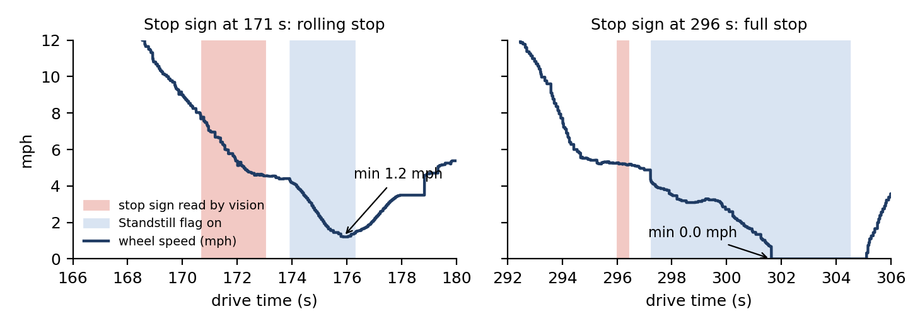
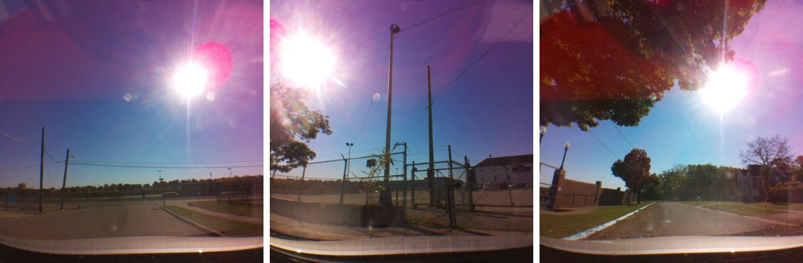
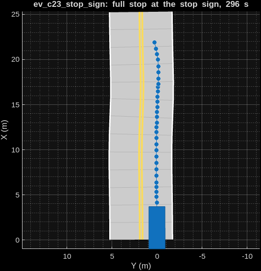
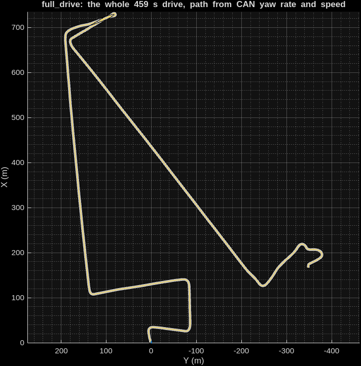

A camera and the CAN bus of a real car record a drive. An agent on Nebius Token Factory reviews the moments that simple rules flag, and confirms, corrects or rejects each one, citing frames and CAN samples that code then checks. The events that the agent and a human labeller agree on become MATLAB driving scenarios. This report explains how it works, how it was evaluated, and where it fails. Every number comes from the repository (github.com/osfieldgaga/initiative-vision-nebius) and can be reproduced from it without an API key.
drivingScenario files, and all of them, plus the whole drive, replay the CAN speed
within 0.05 m/s rms in MATLAB.Engineers who test driver-assistance software need lists of real moments ("rolled through the stop sign", "left turn without a blinker") to turn into test cases. Today people scrub through video to find them. This project does it with an agent, under four constraints set at the start:
lld.py, signs.py)
is imported unchanged.vision.jsonl,
timeline.jsonl, candidates.json, events.json, the .m scenarios.One drive (Oct 22, 2026) recorded by a Raspberry Pi 3B in my car: 6998 frames at 640 × 640 (15 fps, 461 s) and the
CAN log. Judges get its privacy copy: faces and number plates blurred, the GPS columns removed, and the raw CAN
file (which holds the VIN) left out. All times are drive time, seconds since the first frame; frames and CAN
rows share the Pi's clock. The camera is mounted sideways; frames are rotated upright and undistorted by
lld.undistort_frame before anyone, person or model, looks at them.
CAN signal names don't come with trustworthy units, so each signal used was checked on the drive itself:
| Signal | Meaning, as verified | How |
|---|---|---|
EBCMWheelSpdFront | speed, m/s | ratio to VehicleSpeed is 2.237 = mph per m/s |
SteeringWheelAngle | degrees, positive = left | every blinker episode is followed by steering the same way |
TurnSignals | 1 = left, 2 = right | same check |
Standstill | not "speed is zero" | see below |
YawRate | (raw − 2.5) × 0.112 deg/s, positive = left | calibrated against the original drive's GPS heading (167 windows, r = 0.96); used only for the MATLAB paths |

vision_batch.py) runs lld.process_frame (YOLOPv2 on
cv.dnn, bird's-eye lane geometry, the stop-sign reader) at 3 fps: 1511 frames. Check: on the 95 lane
frames labelled for the OpenCV entry, lane_valid matches its published evaluation exactly (precision
0.977, recall 0.729). The sign reader fires at both real stop signs and once on red autumn leaves (seq 3856), a
false positive deliberately left in as a test of the agent.fuse.py) attaches to each frame the car's state at that instant: the last CAN row at
or before it, never a future value. Each row keeps row_ts_ns, the timestamp of the exact CAN row
used: the hook for traceability.candidates.py) apply simple rules: a standstill gives a stop (a stop sign if one
was read in the 10 s before); steering past 90° gives a turn, 20-90° for 2 s at speed a curve; a vision departure
flag in 2 consecutive frames a lane departure. 37 candidates: 19 turns, 7 stops, 6 lane departures, 3 stop signs,
2 curves. Each carries its evidence (frames, key frames, CAN rows, statistics).agent.py holds one short conversation per candidate with Nemotron 3 Super at temperature 0.
That keeps each context small and cheap, makes every decision independent and individually replayable, and lets a
failure on one candidate leave the others untouched. The system prompt gives the task (confirm, correct or reject),
the meaning of each data column, the event definitions read at run time from data/eval/LABELLING.md
(the same text the human labeller used), and rules of thumb: reject parking-lot manoeuvring; vision can be wrong,
so check frames; a stop sign the car didn't stop at is corrected to no_stop, not rejected.
| Tool | What it does | Limits |
|---|---|---|
get_window(t_start, t_end) | timeline rows as a compact table: frame, time, CAN row, mph, steering, blinker, standstill, brake, gear, accel, lane_valid, offset, departure, signs | ≤ 60 s, ≤ 60 rows |
look_at_frames(seqs, question) | asks Nemotron 3.5 Super VL about upright frames; it answers one line per frame | ≤ 4 frames |
rerun_vision(t_start, t_end) | runs the OpenCV pipeline on every frame (15 fps) of a short window | ≤ 3 s, cached |
emit_event(...) | the answer: verdict, type, times, side, detail, 1-6 claims, a reason without numbers | validated |
A claim is a citation the validator can check: {"seq": 4592, "field": "mph", "value": "0.0"}.
Fields are the table's columns plus vision_stop_sign (did OpenCV read a stop sign in that frame) and
frame_check (a quote of what the VL model said about that frame). The model calls tools for up to 8
turns. When it calls emit_event the validator checks the answer; refused answers go back with the list
of errors, and after 4 tries the candidate is kept as the rules found it and marked unverified. The system
never invents an answer of its own.
Language models are good at judgement and unreliable with precise facts: they misread a table, round numbers, or
state something plausible that isn't in the data. validate() is plain code that turns "the model says
so" into "the data says so":
frame_check must quote the VL
model's answer about that frame.In the final run the validator refused 13 answers on 11 of 37 candidates, and every one was then fixed:
too many claims (6), a claimed value that contradicts the data (6: OpenCV's stop-sign reading, the brake, the gear,
the standstill flag), a frame with no data (2) and an unknown field (1); one refusal can list several errors. The validator is
unit-tested on the real drive in src/tests/test_agent.py.
Candidate c23, from the final run's recording runs/…/agent/transcripts/c23.json (5 calls).
The rules proposed: stop sign read at 296.0 s, standstill until 304.4 s, detail full_stop.
1. Super (thinking) "verify stop sign detection around 296 sec" → get_window(295, 305)
code 21 rows: speed 5.7 → 0.0 mph, sign "stop" read at frame 4507, left blinker on
2. Super → look_at_frames([4507], "Is there a stop sign visible in this frame?")
VL "Frame 4507: Yes"
3. Super → emit_event(confirmed, stop_sign, 296.04-304.41, full_stop, claims:
4507 vision_stop_sign true · 4592 mph 0.0 · 4528 standstill true · 4627 standstill false)
validator REFUSED: "claim seq 4627: standstill is True in the data, not 'false'"
4. Super (thinking) "we need to adjust claim: at seq 4627, standstill is true (since still stopped)"
→ emit_event(... same, with 4627 standstill true)
validator ok: all 4 claims match the data; vision gate passed (frame 4507 checked);
slowest speed in 296.04-304.41 s is 0.0 mph → full_stop ✓
The model's first answer contained a plausible but false fact (that the car had started moving at frame 4627).
The validator caught it, the model corrected it, and the accepted event in events.json resolves every
claim to its source, so anyone can open the frame and the CAN line:
{"seq": 4592, "field": "mph", "value": "0.0", "t_s": 302.007,
"frame": "00004592_4851274309000.jpg", "can_row": 4851272192169}
This event is one of the 8 exported to MATLAB (ev_c23_stop_sign.m, section 13); its header names
hand label row 22 as agreeing.
tokenfactory.py (152 lines, standard library only) sends each request to Token Factory's
OpenAI-compatible API and appends to a transcript the SHA-256 of the exact request, the request (images replaced
by their hash) and the full response. With --replay it answers each request from the transcript, in order,
after checking the hash.
events.json byte for byte.temperature 0 makes a model more repeatable, not deterministic (section 10 measures it); recording the responses is the only way to make "re-run it" give the same answer.
An evaluation needs a reference independent of the system: what really happened, decided by a person watching the
drive. label_events.py prefill listed 36 moments worth a look, mostly from CAN, each with a guessed type;
I reviewed them in label_tool.py (the OpenCV entry's virtual-Pi player plus a panel that edits the CSV),
fixed types, times and details, marked non-events no, and added events the list missed.
LABELLING.md; the agent reads the
same text. Only driving on roads counts: manoeuvring inside a parking lot or driveway is no.no before the final scoring,
each with a note saying why.A detection matches a labelled event of the same type and side whose time overlaps it (padded by 1 s), one to one. Precision = right ÷ flagged: when it reports an event, how often is it real. Recall = found ÷ 15: how many real events it finds. Events the agent rejected are not flagged.
Discipline: the agent fixes for the final run were chosen before labelling, and the final run was named in advance; the repeat runs measure noise and are not used to pick a better score.
| flagged | right | precision | found / 15 | recall | unverified | |
|---|---|---|---|---|---|---|
| Rules alone | 37 | 12 | 0.32 | 12 | 0.80 | – |
| Agent, run 1 (code before the fixes) | 23 | 11 | 0.48 | 11 | 0.73 | 3 |
| Agent, final run | 21 | 9 | 0.43 | 9 | 0.60 | 0 |
| Agent, repeat 3 | 20 | 9 | 0.45 | 9 | 0.60 | 0 |
| Agent, repeat 4 | 25 | 9 | 0.36 | 9 | 0.60 | 0 |
| Agent, repeat 5 | 21 | 10 | 0.48 | 10 | 0.67 | 0 |
Over the 4 runs with the final code, precision ranges 0.36-0.48 (median 0.44) and recall 0.60-0.67 (median 0.60), always above the rules' 0.32 precision and below their 0.80 recall. 20 of 37 candidates got the same decision (verdict, type and side) in every run; the other 17 split, e.g. c06 turn right ×2 / rejected ×2; c15 stop_sign ×2 / rejected ×2; c32 turn right ×3 / rejected ×1. The splits include real events (the turns c06 and c32) and the red leaves (c15, reported as a stop sign in half the runs), so no single run is representative; a majority vote over runs is an obvious next step, to be measured on a new drive.
| Type | labelled | rules: right / flagged | agent: right / flagged | notes |
|---|---|---|---|---|
| turn | 9 | 8 / 19 | 6 / 12 | agent false alarms are mostly turns inside parking lots or the dead-end street |
| stop_sign | 3 | 2 / 3 | 2 / 3 | the third "stop sign" is the red leaves (section 11); the 83 s sign is never in view |
| other_stop | 1 | 1 / 7 | 1 / 3 | |
| lane_departure | 2 | 1 / 6 | 0 / 2 | the one it confirmed at 372 s is on the opposite side to the label |
| curve | 0 | 0 / 2 | 0 / 1 | a real turn downgraded to a curve |
| all | 15 | 12 / 37 | 9 / 21 |
Detail accuracy (on matched events: full or rolling stop, blinker or not) is 0.89 for the agent and 0.92 for the rules; the only miss in the final run is the 171 s stop sign (rolling by the CAN log, full by my label). The one hand-added event (a slight right turn at 74 s) was not proposed by the rules, so neither method could find it.

c32): a
real right turn into a parking-lot entrance. Asked "is there an intersection ahead?", the VL model said no, and the
agent rejected the turn, although the definitions count road ↔ parking entrance as a turn. Right, frame 3856
(251 s, c15): red leaves that OpenCV read as a stop sign.c15) the VL model answered "No" for
all 6 frames it was shown, yet the agent reported a stop sign the car didn't stop at. The prompt says a sign the car
didn't stop at is corrected, not rejected, and the agent applied that to a sign that wasn't there. The validator
only checks that it looked, not that what it saw supports the answer. In run 1 the same candidate was
correctly rejected.Not fixed on purpose: fixing 1 and 2 now (a validator rule that a stop sign needs a VL "yes", a prompt line about mid-turn views) would be tuning on the same labels that score it. The honest way is to fix them on this drive and measure on a new one.
The agent uses the VL model as a second pair of eyes, so it was measured. eval_vl_lanes.py asks
Nemotron 3.5 Super VL, for each of the 95 frames hand-labelled for the OpenCV entry, whether painted lane lines are
visible on both sides, and compares with the labels and with OpenCV's lane_valid:
| "Both lane lines visible" | precision | recall | accuracy | TP / FP / FN / TN |
|---|---|---|---|---|
| Nemotron 3.5 Super VL | 1.00 | 0.25 | 0.54 | 15 / 0 / 44 / 36 |
| OpenCV pipeline (YOLOPv2 + geometry) | 0.98 | 0.73 | 0.82 | 43 / 1 / 16 / 35 |
When the VL model says lines are visible it is right; it misses three quarters of the lines that are there. The agent's prompt states these numbers, so a VL "no lines" is treated as weak evidence. Sending raw sideways frames gave recall 0.00; sending what the labeller saw (undistorted, upright) gave 0.25, so every VL call uses that view.
export_matlab.py --labels exports only the events that the agent verified and the hand labels agree
with (same type, side and detail, overlapping time, exactly as the scorer matches them): fewer scenarios, each
confirmed twice. That gives 8 files (6 turns, a full stop at a stop sign, a stop at the lot exit) plus
full_drive.m, the whole drive in one scenario. Each file is a MATLAB function returning
[scenario, egoVehicle]; run on its own it plays itself, with the drive time, speed and current event in
the title.


Checked in MATLAB. verify_matlab.py simulates every file with advance() and compares the
ego's speed and position with the CAN profile it came from, with tolerances set before the first run (speed 0.5 m/s rms,
timing 1 s, end position 2 m). All 9 pass: speed within 0.01-0.05 m/s rms, timing within 0.1 s, end within 0.8 m; the
whole drive is 0.05 m/s rms and 0.1 s late after 459 s.
Getting there took four corrections, none of which loosened a tolerance: a checker bug (it counted the time after the last waypoint as speed zero); denser waypoints (1 m spacing cut tight turns); no fixed stop time (a car a few tenths late was cut off before its last waypoint); and retimed stops. The wheel-speed sensor drops from about 0.3 m/s straight to 0, while MATLAB changes speed evenly between waypoints, so every slow-down and start took 0.3-0.6 s longer than the car did, and the whole drive fell 2.4 s behind over 8 stops. Each stop's wait is now set so the car reaches the next waypoint on time.
How close is the path to reality? Replaying the profile proves the file is faithful to the CAN data, not that the integrated path is faithful to the road. Against the original drive's GPS heading change (9 events of the first export where GPS heading is usable): median error 11.5°, worst 30°. Good for "a left turn of about 90°", not for lane-level geometry.
--max-usd.| Problem | What happened | Change |
|---|---|---|
| Standstill flag | A rolling stop looked like a full stop | Stop details from wheel speed, in rules and validator |
| Skipped visual check | The model confirmed the red-leaves stop sign without looking, although the prompt asked it to | The rule moved from the prompt into the validator (vision gate) |
| No way to cite what VL saw | The model wanted to say "no stop sign" but could only cite OpenCV's reading | frame_check claims that must quote a real VL answer |
| Ambiguous VL answers | One "Yes" for four frames didn't say which frame showed what | One answer line per frame; a quote must come from that frame's line |
| Sideways frames | VL got raw rotated frames; lane recall 0.00 | All VL frames undistorted and upright |
| Numbers in the reason | A reason said "~1.5 mph" where the data says 1.1; reasons aren't validated | Reasons carry no numbers; claims do |
| Unverified candidates | 3 in run 1, mostly from an unclear "too many claims" error | The error says how many were given; 4 tries: 0 unverified |
| Labels vs definitions | My labels counted parking-lot moves my own definitions exclude | Fixed before the final scoring, with notes |
| MATLAB drift | The whole-drive replay fell 2.4 s behind | Stop waits retimed (section 13) |
# from the repository root, with the drive unzipped into test_sessions/
D=test_sessions/20261022T164127Z-084b
python src/scripts/agent.py $D --replay # the final run, from its recordings (no key)
python src/scripts/score.py runs/20261022T164127Z-084b/agent/events.json data/eval/events_gt_20261022T164127Z-084b.csv
python src/scripts/score_runs.py data/eval/events_gt_20261022T164127Z-084b.csv \
runs/20261022T164127Z-084b/agent/events.json runs/20261022T164127Z-084b/agent_repeats/run*/events.json
python src/scripts/export_matlab.py $D --labels data/eval/events_gt_20261022T164127Z-084b.csv
python src/scripts/verify_matlab.py # needs MATLAB + Automated Driving Toolbox
python src/scripts/label_tool.py $D # watch the drive with the labels
python src/scripts/agent.py $D --agent-dir runs/mine --max-usd 0.5 # live, with NEBIUS_API_KEY
# recompute steps 1-3 (needs the vision weights): vision_batch.py, fuse.py, candidates.py
for t in src/tests/test_*.py; do python -m unittest "$t"; done
| File | Role |
|---|---|
lld.py, signs.py | the OpenCV pipeline from the OpenCV entry, unchanged |
src/scripts/vision_batch.py, fuse.py, candidates.py | drive → vision → timeline → candidates |
src/scripts/agent.py, tokenfactory.py | agent, tools, validator; Token Factory client with record, replay and cap |
src/scripts/score.py, score_runs.py | scoring one run; spread over several |
src/scripts/label_events.py, label_tool.py, data/eval/ | labels, definitions, labelling tool |
src/scripts/export_matlab.py, verify_matlab.py, scenarios/ | MATLAB scenarios and their check |
src/scripts/eval_vl_lanes.py | VL vs the 95 lane labels |
runs/20261022T164127Z-084b/ | every intermediate output; agent/ = final run, agent_repeats/ = noise runs |